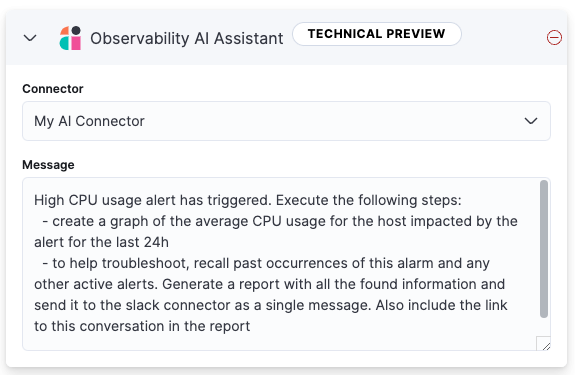

Observability AI Assistant
editTo run the Observability AI Assistant on self-hosted Elastic stack, you need an appropriate license.
The AI Assistant uses generative AI to provide:
- Contextual insights — open prompts throughout Observability that explain errors and messages and suggest remediation.
- Chat — have conversations with the AI Assistant. Chat uses function calling to request, analyze, and visualize your data.

The AI Assistant integrates with your large language model (LLM) provider through our supported Elastic connectors:
- OpenAI connector for OpenAI or Azure OpenAI Service.
- Amazon Bedrock connector for Amazon Bedrock, specifically for the Claude models.
- Google Gemini connector for Google Gemini.
The AI Assistant is powered by an integration with your large language model (LLM) provider. LLMs are known to sometimes present incorrect information as if it’s correct. Elastic supports configuration and connection to the LLM provider and your knowledge base, but is not responsible for the LLM’s responses.
Also, the data you provide to the Observability AI assistant is not anonymized, and is stored and processed by the third-party AI provider. This includes any data used in conversations for analysis or context, such as alert or event data, detection rule configurations, and queries. Therefore, be careful about sharing any confidential or sensitive details while using this feature.
Requirements
editThe AI assistant requires the following:
- Elastic Stack version 8.9 and later.
-
An account with a third-party generative AI provider that supports function calling. The Observability AI Assistant supports the following providers:
-
OpenAI
gpt-4+. -
Azure OpenAI Service
gpt-4(0613) orgpt-4-32k(0613) with API version2023-07-01-previewor more recent. - AWS Bedrock, specifically the Anthropic Claude models.
-
OpenAI
- An Enterprise Search server if search connectors are used to populate external data into the knowledge base.
-
An account with a third-party generative AI provider that preferably supports function calling. If your AI provider does not support function calling, you can configure AI Assistant settings under Stack Management to simulate function calling, but this might affect performance.
Refer to the connector documentation for your provider to learn about supported and default models.
- The knowledge base requires a 4 GB machine learning node.
The free tier offered by third-party generative AI provider may not be sufficient for the proper functioning of the AI assistant. In most cases, a paid subscription to one of the supported providers is required.
The Observability AI assistant doesn’t support connecting to a private LLM. Elastic doesn’t recommend using private LLMs with the Observability AI assistant.
In Elastic Cloud or Elastic Cloud Enterprise, if you have Machine Learning autoscaling enabled, Machine Learning nodes will be started when using the knowledge base and AI Assistant. Therefore using these features will incur additional costs.
Your data and the AI Assistant
editElastic does not use customer data for model training. This includes anything you send the model, such as alert or event data, detection rule configurations, queries, and prompts. However, any data you provide to the AI Assistant will be processed by the third-party provider you chose when setting up the OpenAI connector as part of the assistant setup.
Elastic does not control third-party tools, and assumes no responsibility or liability for their content, operation, or use, nor for any loss or damage that may arise from your using such tools. Please exercise caution when using AI tools with personal, sensitive, or confidential information. Any data you submit may be used by the provider for AI training or other purposes. There is no guarantee that the provider will keep any information you provide secure or confidential. You should familiarize yourself with the privacy practices and terms of use of any generative AI tools prior to use.
Set up the AI Assistant
editTo set up the AI Assistant:
-
Create an authentication key with your AI provider to authenticate requests from the AI Assistant. You’ll use this in the next step. Refer to your provider’s documentation for information about creating authentication keys:
-
Create a connector for your AI provider. Refer to the connector documentation to learn how:
-
Authenticate communication between Observability and the AI provider by providing the following information:
- In the URL field, enter the AI provider’s API endpoint URL.
- Under Authentication, enter the key or secret you created in the previous step.
Add data to the AI Assistant knowledge base
editIf you started using the AI Assistant in technical preview, any knowledge base articles you created before 8.12 will have to be reindexed or upgraded before they can be used. Knowledge base articles created before 8.12 use ELSER v1. In 8.12, knowledge base articles must use ELSER v2. Options include:
- Clear all old knowledge base articles manually and reindex them.
- Upgrade all knowledge base articles indexed with ELSER v1 to ELSER v2 using a Python script.
The AI Assistant uses ELSER, Elastic’s semantic search engine, to recall data from its internal knowledge base index to create retrieval augmented generation (RAG) responses. Adding data such as Runbooks, GitHub issues, internal documentation, and Slack messages to the knowledge base gives the AI Assistant context to provide more specific assistance.
Your AI provider may collect telemetry when using the AI Assistant. Contact your AI provider for information on how data is collected.
Add data to the knowledge base with one or more of the following methods:
- Use the knowledge base UI available at AI Assistant Settings page.
- Use search connectors
You can also add information to the knowledge base by asking the AI Assistant to remember something while chatting (for example, "remember this for next time"). The assistant will create a summary of the information and add it to the knowledge base.
Use the knowledge base UI
editTo add external data to the knowledge base in Kibana:
-
To open AI Assistant settings, find
AI Assistantsin the global search field. - Under Elastic AI Assistant for Observability, click Manage settings.
- Switch to the Knowledge base tab.
-
Click the New entry button, and choose either:
- Single entry: Write content for a single entry in the UI.
-
Bulk import: Upload a newline delimited JSON (
ndjson) file containing a list of entries to add to the knowledge base. Each object should conform to the following format:{ "id": "a_unique_human_readable_id", "text": "Contents of item" }
Use search connectors
editThe search connectors described in this section differ from the Stack management → Connectors configured during the AI Assistant setup. Search connectors are only needed when importing external data into the Knowledge base of the AI Assistant, while the stack connector to the LLM is required for the AI Assistant to work.
Connectors allow you to index content from external sources thereby making it available for the AI Assistant. This can greatly improve the relevance of the AI Assistant’s responses. Data can be integrated from sources such as GitHub, Confluence, Google Drive, Jira, AWS S3, Microsoft Teams, Slack, and more.
These connectors are managed under the Search Solution in Kibana, and they require an Enterprise Search server connected to the Elastic Stack.
By default, the AI Assistant queries all search connector indices. To override this behavior and customize which indices are queried, adjust the Search connector index pattern setting on the AI Assistant Settings page. This allows precise control over which data sources are included in AI Assistant knowledge base.
To create a connector and make its content available to the AI Assistant knowledge base, follow these steps:
-
To open Connectors, find
Content / Connectorsin the global search field.If your Kibana Space doesn’t include the Search solution you will have to create the connector from a different space or change your space Solution view setting to
Classic. -
Follow the instructions to create a new connector.
For example, if you create a GitHub connector you have to set a
name, attach it to a new or existingindex, add yourpersonal access tokenand include thelist of repositoriesto synchronize.Learn more about configuring and using connectors in the Elasticsearch documentation.
-
Create a pipeline and process the data with ELSER.
To create the embeddings needed by the AI Assistant (weights and tokens into a sparse vector field), you have to create an ML Inference Pipeline:
- Open the previously created connector and select the Pipelines tab.
-
Select Copy and customize button at the
Unlock your custom pipelinesbox. -
Select Add Inference Pipeline button at the
Machine Learning Inference Pipelinesbox. - Select ELSER (Elastic Learned Sparse EncodeR) ML model to add the necessary embeddings to the data.
- Select the fields that need to be evaluated as part of the inference pipeline.
- Test and save the inference pipeline and the overall pipeline.
-
Sync the data.
Once the pipeline is set up, perform a Full Content Sync of the connector. The inference pipeline will process the data as follows:
- As data comes in, ELSER is applied to the data, and embeddings (weights and tokens into a sparse vector field) are added to capture semantic meaning and context of the data.
-
When you look at the documents that are ingested, you can see how the weights and token are added to the
predicted_valuefield in the documents.
-
Check if AI Assistant can use the index (optional).
Ask something to the AI Assistant related with the indexed data.
Interact with the AI Assistant
editChat with the AI Assistant or interact with contextual insights located throughout Observability. Check the following sections for more on interacting with the AI Assistant.
After every answer the LLM provides, let us know if the answer was helpful. Your feedback helps us improve the AI Assistant!
Chat with the assistant
editSelect the AI Assistant icon () at the upper-right corner of any Observability application to start the chat.
This opens the AI Assistant flyout, where you can ask the assistant questions about your instance:
Asking questions about your data requires function calling, which enables LLMs to reliably interact with third-party generative AI providers to perform searches or run advanced functions using customer data.
When the Observability AI Assistant performs searches in the cluster, the queries are run with the same level of permissions as the user.
Suggest functions
editThis functionality is in beta and is subject to change. The design and code is less mature than official GA features and is being provided as-is with no warranties. Beta features are not subject to the support SLA of official GA features.
The AI Assistant uses functions to include relevant context in the chat conversation through text, data, and visual components. Both you and the AI Assistant can suggest functions. You can also edit the AI Assistant’s function suggestions and inspect function responses.
Main functions:
|
|
Get alerts for Observability. |
|
|
Call Elasticsearch APIs on your behalf. |
|
|
Call Kibana APIs on your behalf. |
|
|
Summarize parts of the conversation. |
|
|
Visualize charts for ES|QL queries. |
Additional functions are available when your cluster has APM data:
|
|
Get field values that are more prominent in the foreground set than the background set. This can be useful in determining which attributes (such as |
|
|
Get the downstream dependencies (services or uninstrumented backends) for a service. Map the downstream dependency name to a service by returning both |
|
|
Get a sample error document based on the grouping name. This also includes the stacktrace of the error, which might hint to the cause. |
|
|
Get a summary of a single service, including the language, service version, deployments, the environments, and the infrastructure that it is running in. For example, the number of pods and a list of their downstream dependencies. It also returns active alerts and anomalies. |
|
|
Get the list of monitored services, their health statuses, and alerts. |
|
|
Display different APM metrics (such as throughput, failure rate, or latency) for any service or all services and any or all of their dependencies. Displayed both as a time series and as a single statistic. Additionally, the function returns any changes, such as spikes, step and trend changes, or dips. You can also use it to compare data by requesting two different time ranges, or, for example, two different service versions. |
Use contextual prompts
editAI Assistant contextual prompts throughout Observability provide the following information:
- Universal Profiling — explains the most expensive libraries and functions in your fleet and provides optimization suggestions.
- Application performance monitoring (APM) — explains APM errors and provides remediation suggestions.
- Infrastructure Observability — explains the processes running on a host.
- Logs — explains log messages and generates search patterns to find similar issues.
- Alerting — provides possible causes and remediation suggestions for log rate changes.
For example, in the log details, you’ll see prompts for What’s this message? and How do I find similar log messages?:
Clicking a prompt generates a message specific to that log entry:
Continue a conversation from a contextual prompt by clicking Start chat to open the AI Assistant chat.
Add the AI Assistant connector to alerting workflows
editUse the Observability AI Assistant connector to add AI-generated insights and custom actions to your alerting workflows as follows:
- Create (or edit) an alerting rule and specify the conditions that must be met for the alert to fire.
- Under Actions, select the Observability AI Assistant connector type.
- In the Connector list, select the AI connector you created when you set up the assistant.
-
In the Message field, specify the message to send to the assistant:

You can ask the assistant to generate a report of the alert that fired, recall any information or potential resolutions of past occurrences stored in the knowledge base, provide troubleshooting guidance and resolution steps, and also include other active alerts that may be related. As a last step, you can ask the assistant to trigger an action, such as sending the report (or any other message) to a Slack webhook.
Currently only Slack, email, Jira, PagerDuty, or webhook actions are supported. Additional actions will be added in the future.
When the alert fires, contextual details about the event—such as when the alert fired, the service or host impacted, and the threshold breached—are sent to the AI Assistant, along with the message provided during configuration. The AI Assistant runs the tasks requested in the message and creates a conversation you can use to chat with the assistant:
Conversations created by the AI Assistant are public and accessible to every user with permissions to use the assistant.
It might take a minute or two for the AI Assistant to process the message and create the conversation.
Note that overly broad prompts may result in the request exceeding token limits. For more information, refer to Token limits. Also, attempting to analyze several alerts in a single connector execution may cause you to exceed the function call limit. If this happens, modify the message specified in the connector configuration to avoid exceeding limits.
When asked to send a message to another connector, such as Slack, the AI Assistant attempts to include a link to the generated conversation.
The server.publicBaseUrl setting must be correctly specified under Kibana settings,
or the AI Assistant is unable to generate this link.
The Observability AI Assistant connector is called when the alert fires and when it recovers.
To learn more about alerting, actions, and connectors, refer to Alerting.
AI Assistant Settings
editTo access the AI Assistant Settings page, you can:
-
Find
AI Assistantsin the global search field. - Use the More actions menu inside the AI Assistant window.
The AI Assistant Settings page contains the following tabs:
- Settings: Configures the main AI Assistant settings, which are explained directly within the interface.
- Knowledge base: Manages knowledge base entries.
-
Search Connectors: Provides a link to Kibana Search → Content → Connectors UI for connectors configuration.
Known issues
edit
Token limits
editMost LLMs have a set number of tokens they can manage in single a conversation. When you reach the token limit, the LLM will throw an error, and Elastic will display a "Token limit reached" error in Kibana. The exact number of tokens that the LLM can support depends on the LLM provider and model you’re using. If you use an OpenAI connector, monitor token utilization in OpenAI Token Usage dashboard. For more information, refer to the OpenAI Connector documentation.